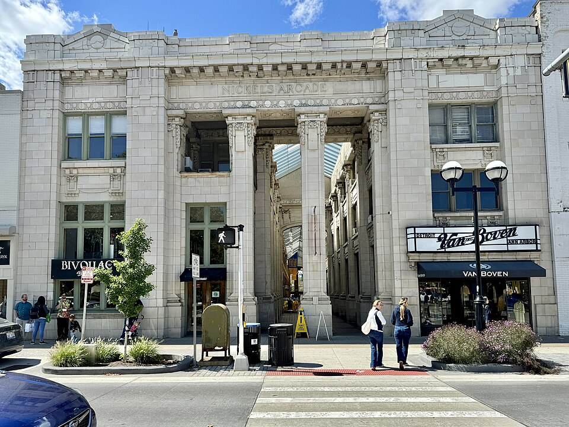

Plan Your Visit
Getting to the Museum
The Ann Arbor Art Museum is located near the center of Ann Arbor, Michigan, within walking distance of downtown restaurants, coffee shops, bookstores, parks, theaters, and University of Michigan buildings.
Visitors can arrive by car, public bus, bicycle, rideshare, or on foot. Ann Arbor’s downtown streets can be busy during university events,football Saturdays, the Ann Arbor Art Fair, the Ann Arbor Film Festival, and summer weekends.
Bike racks are available near the main entrance. Public parking structures are located throughout downtown Ann Arbor, and some street parking is available nearby. Visitors should allow extra time for parking during major city events.

Exploring Nearby Ann Arbor
A museum visit can be part of a larger Ann Arbor outing. Visitors often combine the museum with a walk through Kerrytown, a meal on Main Street, a bookstore visit on State Street, or a walk near the University of Michigan Diag.
Outdoor spaces such as Nichols Arboretum, the Huron River, Gallup Park, and the Border-to-Border Trail offer opportunities to connect visual art with the city’s natural landscape.
- Walk through downtown Ann Arbor before or after your visit.
- Explore Kerrytown shops and the Ann Arbor Farmers Market.
- Visit nearby theaters, galleries, and music venues.
- Take a walk near the Huron River or Nichols Arboretum.
Accessibility and Visitor Support
The museum welcomes visitors with disabilities and offers resources to support a comfortable visit. Visitors may contact the museum in advance to ask about mobility access, seating, sensory considerations, or other accommodations.
The building includes accessible entrances, elevators, restrooms, and seating areas. Service animals are welcome throughout the museum.
Visitor Guidelines
Food and drinks are not allowed inside the galleries. Water bottles should remain closed and stored while visitors are near artwork. Photography is welcome in many areas, but flash photography, tripods, and selfie sticks may be restricted for certain works of art.
Visitors should keep a safe distance from artworks, cases, platforms, and gallery walls. Museum staff may ask visitors to move bags, coats, or umbrellas if they could accidentally touch artwork.
Backpacks should be worn on one shoulder or carried by hand to help protect artwork and other visitors.
Museum Location
The museum is located in Ann Arbor, Michigan, a city known for its university community, independent businesses, parks, festivals, public art, and civic engagement. Visitors should allow extra travel time during football weekends, commencement, move-in week, and major downtown events.
Before You Arrive
Visitors are encouraged to reserve tickets online before arriving at the museum, especially for weekend visits, special exhibitions, and days when downtown Ann Arbor is expected to be busy.
Bring your student ID if you plan to purchase a discounted ticket.
If you are visiting with a class, check with your instructor about required galleries, writing prompts, sketching rules, or group meeting locations.